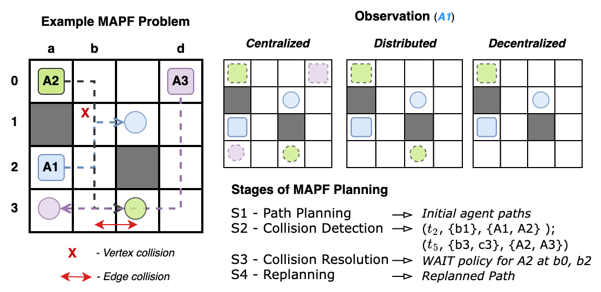
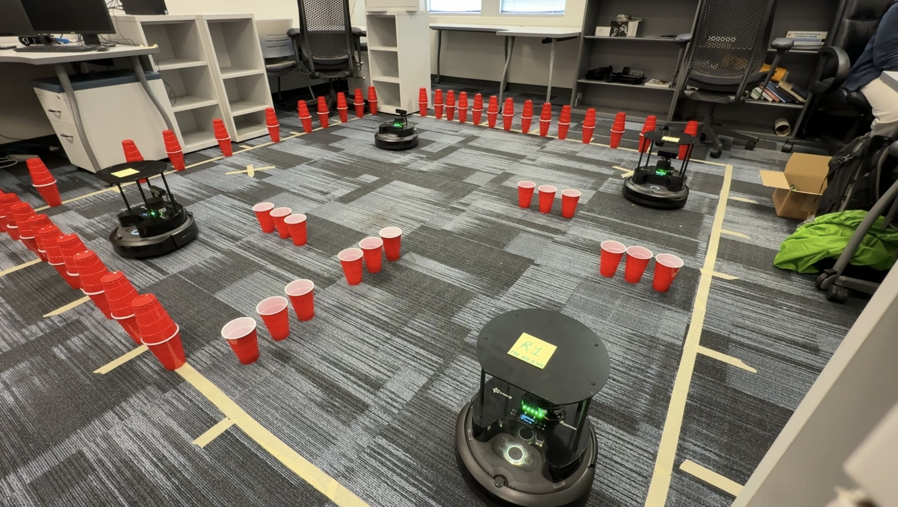
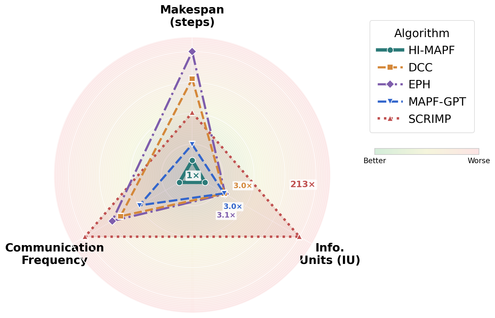

Multi-Agent Path Finding (MAPF)Contact: Students: Bharath Muppasani, Ritirupa Dey, Risha Patel; Faculty: Biplav Srivastava, Vignesh Narayanan Key Idea
|
|
HI-MAPF: Resource-Efficient Multi-Agent Deployment Traditional MAPF approaches often assume centralized search with global state, high-bandwidth communication, or learning-based policies that require sophisticated onboard perception and frequent inter-agent messages. HI-MAPF formulates this bottleneck as information-centric MAPF (I-MAPF). Each agent plans from local information, while a coordinator monitors for likely vertex or edge conflicts and sends minimal alerts only when replanning is needed. Escalation proceeds through lightweight repair strategies such as yielding, static replanning, dynamic replanning, and bounded joint planning for hard residual conflicts. Experimental ResultsHI-MAPF was evaluated on standard MAPF benchmarks with 8 to 128 agents against search-based and learning-based baselines. It achieved a 2x to 510x reduction in information sharing while maintaining high success rates. In hardware validation with five TurtleBot4 robots on a 6×6 grid, HI-MAPF achieved 100% success with 199 IU, compared with 42,413 IU for SCRIMP in the same setup.
8-128 agents
2x-510x less information sharing
5 TurtleBot4 robots
  Physical deployment on five TurtleBot4 robots.  Hardware comparison across makespan, information units, and communication frequency. Representative Publication |
|
Related Explainable MAPF Work In parallel with the resource-efficient deployment work, we also study ontology-driven explanation for MAPF. The Multi-Agent Planning Ontology (maPO) represents planner traces, conflicts, alerts, and replanning behavior as a queryable knowledge graph, enabling human-readable explanations for why agents waited, replanned, or avoided specific regions. Representative Publications
|